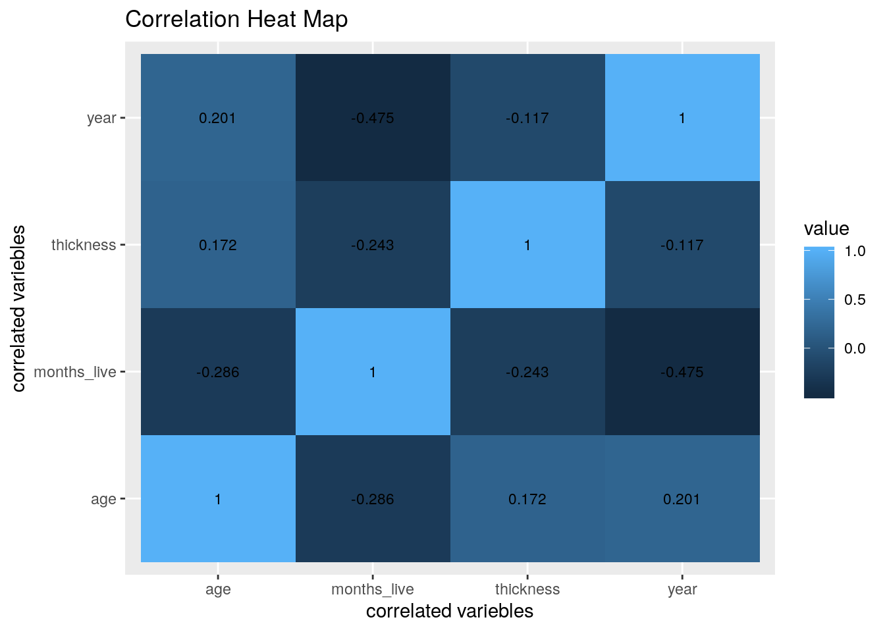
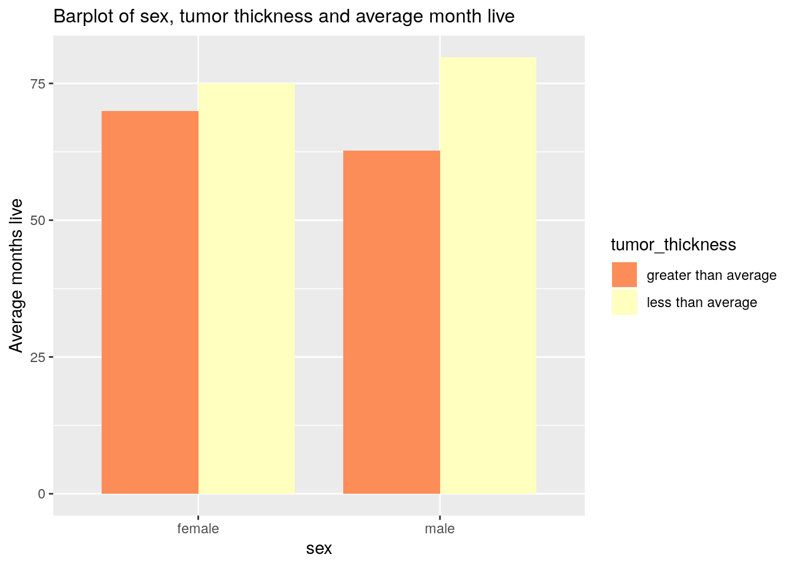
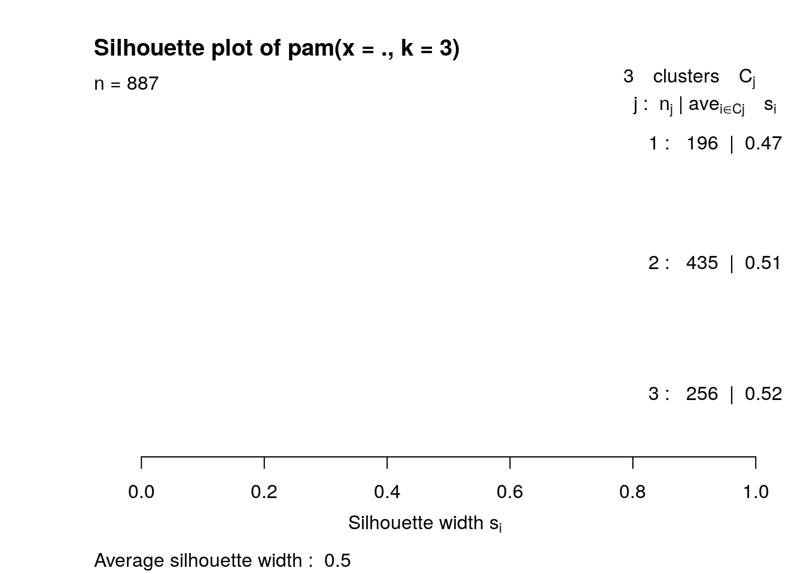

March 17, 2020
Name: Quang Nguyen qnn97
R Markdown
This is an R Markdown document. Markdown is a simple formatting syntax for authoring HTML, PDF, and MS Word documents. For more details on using R Markdown see http://rmarkdown.rstudio.com.
When you click the Knit button a document will be generated that includes both content as well as the output of any embedded R code chunks within the document. You can embed an R code chunk like this:
Introduction:
The dataset consist of the measurements on the patients with malignant melanoma. The data was collected in the patients who had their tumour removed surgically at the Department of Plastic Surgery, University Hospital of Odense, Denmark from 1962 to 1977. The data included 205 observations and 7 variebles in which 4 of them (age, time, thickness and year) are numeric varieble and 3 of them (sex, status, ulcer) are categorical varieble. These dataset was taken because I am interested in medicine and cancer in particular. Melanoma is popular known as skin cancer. Even though it is not a popular cancer type, it can be very deadly because it can spread to other organs rapidly if it is not discovered and treated properly.
The original data is obtained and was divided into two different datasets. One consists of all numeric varieble “project_age” and another consists of categorical variebles “project_another”. The project is intended to discover the prognostic determinant of melanoma such as thickness of tumor, ulcer of tumor, age,… There are major predicted associations such as higher age patients will likely to have ulcer and thicker tumor. Those people also has lower rate of survival after the operation than younger patients. These predictions along with others will be studied in this project.
library(boot)
project1_qnn97 <- melanoma
help("melanoma")Data preparation:
This step is done to break up the original dataset and change the listing of some variebles for convenient analysis further.
library(dplyr)
library(tidyr)
library(tidyverse)
# The first dataset
project_age <- project1_qnn97 %>% dplyr::select(age, time, thickness,
year) %>% group_by(age)
# The second dataset
project_another <- project1_qnn97 %>% dplyr::select(age, sex,
ulcer, status) %>% group_by(age)
# Change 0,1 observations in 'sex' to female and male
project_another$sex <- recode(project_another$sex, `0` = "female",
`1` = "male")
# Change 0,1 observations in 'ulcer'' to Yes and No
project_another$ulcer <- recode(project_another$ulcer, `0` = "No",
`1` = "yes")
head(project_age)## # A tibble: 6 x 4
## # Groups: age [6]
## age time thickness year
## <dbl> <dbl> <dbl> <dbl>
## 1 76 10 6.76 1972
## 2 56 30 0.65 1968
## 3 41 35 1.34 1977
## 4 71 99 2.9 1968
## 5 52 185 12.1 1965
## 6 28 204 4.84 1971# Change 1,2,3 to the status of patient after operation.
project_another$status[project_another$status == 1] <- "died from melanoma"
project_another$status[project_another$status == 2] <- "alive"
project_another$status[project_another$status == 3] <- "died from other causes"
head(project_another)## # A tibble: 6 x 4
## # Groups: age [6]
## age sex ulcer status
## <dbl> <chr> <chr> <chr>
## 1 76 male yes died from other causes
## 2 56 male No died from other causes
## 3 41 male No alive
## 4 71 female No died from other causes
## 5 52 male yes died from melanoma
## 6 28 male yes died from melanomaTidying: Rearranging Wide/Long
Because the dataset is already tidy this step is done at the other places in the
# Joining/Merging
project_joindata1 <- project_another %>% full_join(project_age)
library(dplyr)The original data was break up to two different dataset that have one identical varieble which is age. Full_join was chosen in order to taken all the original variebles because it is able to return all rows and all columns from both separated datasets. However, because, the varieble “age” is match so it is a joining varieble and joining dataset only have 7 varieble. The reason joining dataset has much more observation than original one because there are multiple matched between two dataset so all the combination of matched are returned.
# Summary Statistics
# Number of distinct ages
n_distinct(project_joindata1$age)## [1] 70n_distinct(project_joindata1$year)## [1] 13# five num stat of age, thickness
fivenum(project_joindata1$thickness)## [1] 0.10 0.97 1.94 3.87 17.42fivenum(project_joindata1$age)## [1] 4 46 56 63 95# 1.Mean survival time in days + mean tumor thickness of
# patients that have ages above 60
project_joindata1 %>% filter(age >= 60) %>% summarize(mean_time = mean(time),
mean_tumor_thickness = mean(thickness)) %>% arrange(mean_time) %>%
head()## # A tibble: 6 x 3
## age mean_time mean_tumor_thickness
## <dbl> <dbl> <dbl>
## 1 95 629 5.48
## 2 89 667 13.8
## 3 76 768. 4.03
## 4 86 826 8.54
## 5 71 1340 3.33
## 6 68 1368 5.51# 2.Compare mean survival time in days + mean tumor thickness
# of patient that greater and less than 60.
project_joindata1 %>% group_by(age_group = case_when(age >= 60 ~
"greater than 60", age < 60 ~ "less than 60")) %>% summarize(mean_time = mean(time),
mean_tumor_thickness = mean(thickness), n = n())## # A tibble: 2 x 4
## age_group mean_time mean_tumor_thickness n
## <chr> <dbl> <dbl> <int>
## 1 greater than 60 1855. 3.87 315
## 2 less than 60 2307. 2.60 572# 3.mean/sd/se of survival time in days of patients in all
# status
project_joindata1 %>% group_by(status) %>% summarize(mean_time = mean(time),
sd_time = sd(time), n = n(), se_time = sd_time/sqrt(n), mean_tumor_thickness = mean(thickness))## # A tibble: 3 x 6
## status mean_time sd_time n se_time mean_tumor_thickness
## <chr> <dbl> <dbl> <int> <dbl> <dbl>
## 1 alive 2256. 1099. 563 46.3 2.93
## 2 died from melanoma 1965. 1092. 261 67.6 3.29
## 3 died from other causes 1926. 1140. 63 144. 3.11# 4.mutate the survival time to be in month
project_joindata1 <- project_joindata1 %>% mutate(time_in_month = time/30,
months_live = round(time_in_month, 2))
project_joindata1 <- dplyr::select(project_joindata1, -c(time_in_month))
# 5.fivenum of months_live
fivenum(project_joindata1$months_live)## [1] 0.330 50.465 66.900 102.430 185.500# 6.sex and 'status' vs average month live after surgery
project_joindata1 %>% group_by(sex, status) %>% summarize(mean(months_live),
n())## # A tibble: 6 x 4
## # Groups: sex [2]
## sex status `mean(months_live)` `n()`
## <chr> <chr> <dbl> <int>
## 1 female alive 75.5 380
## 2 female died from melanoma 65.8 144
## 3 female died from other causes 64.3 29
## 4 male alive 74.6 183
## 5 male died from melanoma 65.2 117
## 6 male died from other causes 64.2 34# 7.ulcer status, tumor thickness vs the average month live
# after operation
project_joindata1 %>% group_by(ulcer) %>% summarize(tumor_thickness = mean(thickness),
month_live = mean(months_live))## # A tibble: 2 x 3
## ulcer tumor_thickness month_live
## <chr> <dbl> <dbl>
## 1 No 2.86 74.6
## 2 yes 3.27 68.0# 8.relationship between age and month lives after operation
project_joindata1 %>% group_by(age) %>% summarize(month_live = mean(months_live)) %>%
arrange(desc(month_live))## # A tibble: 70 x 2
## age month_live
## <dbl> <dbl>
## 1 22 140.
## 2 30 137.
## 3 12 126.
## 4 21 126.
## 5 29 122.
## 6 50 119.
## 7 4 113.
## 8 42 101.
## 9 26 99.1
## 10 47 94.0
## # … with 60 more rows# 9.Because average thickness of tumor is 1.94 mm. The month
# that patient can live depending on tumor thickness and
# ulcer was examined.
project_joindata1 %>% group_by(tumor_thickness = case_when(thickness >=
1.94 ~ "greater than average", thickness < 1.94 ~ "less than average"),
ulcer) %>% summarize_at(c("months_live"), mean)## # A tibble: 4 x 3
## # Groups: tumor_thickness [2]
## tumor_thickness ulcer months_live
## <chr> <chr> <dbl>
## 1 greater than average No 71.4
## 2 greater than average yes 62.6
## 3 less than average No 77.8
## 4 less than average yes 75.2# 10.Average months live of patients that have operation from
# 1970 onward.
project_joindata1 %>% filter(year >= 1970) %>% group_by(year) %>%
summarize(months_live = mean(months_live)) %>% arrange(desc(months_live))## # A tibble: 6 x 2
## year months_live
## <dbl> <dbl>
## 1 1971 60.3
## 2 1972 58.7
## 3 1970 57.2
## 4 1973 54.3
## 5 1974 7.73
## 6 1977 1.17# 11.Number of patients correspond to each status in the year
# of 1970 onward.
project_joindata1 %>% filter(year >= 1970) %>% group_by(year,
status) %>% summarize(number = n()) %>% arrange(year) %>%
pivot_wider(names_from = "status", values_from = "number")## # A tibble: 6 x 4
## # Groups: year [6]
## year alive `died from melanoma` `died from other causes`
## <dbl> <int> <int> <int>
## 1 1970 51 34 6
## 2 1971 73 38 9
## 3 1972 124 47 17
## 4 1973 88 30 2
## 5 1974 5 2 1
## 6 1977 3 NA NA# 12.Year before 1970 that have the most patient alive
drop_false <- project_joindata1 %>% filter(year < 1970) %>% group_by(year,
status = status == "alive") %>% summarize(number = n()) %>%
arrange(year)
drop_false$status[drop_false$status == FALSE] <- NA
drop_false$status[drop_false$status == TRUE] <- "alive"
drop_false %>% na.omit() %>% arrange(desc(number)) %>% head()## # A tibble: 6 x 3
## # Groups: year [6]
## year status number
## <dbl> <chr> <int>
## 1 1967 alive 61
## 2 1968 alive 49
## 3 1969 alive 47
## 4 1965 alive 30
## 5 1966 alive 26
## 6 1962 alive 3# 13.corelation of numeric varieble in dataset
project_cor <- project_joindata1 %>% select_if(is.numeric) %>%
select(-time)
cor(project_cor)## age thickness year months_live
## age 1.0000000 0.1715510 0.2006672 -0.2856043
## thickness 0.1715510 1.0000000 -0.1165230 -0.2427042
## year 0.2006672 -0.1165230 1.0000000 -0.4753268
## months_live -0.2856043 -0.2427042 -0.4753268 1.0000000tidycor <- cor(project_cor) %>% as.data.frame %>% rownames_to_column %>%
pivot_longer(-1, names_to = "name", values_to = "correlation")
# Summarize/discuss all results in no more than two
# paragraphsThe summary statistics are intended to give the overall overview of the prognostic variebles to sex, age and time/months_live. Overall, there is many evidences show that higher ages decrease the mean living_time of patient (supports by statistic#1,2,8). Especially, patients who are greater than 60 years old, have significant higher tumor thickness than younger patients and patient who are above 85 has distinctive lower living time (around 800 day or less).
The other prognostic variebles are ulcer status and tumor thickness. While tumor thickness solely is not affect much the living time of the patient (statistic#9), patient who have ulcer have the tumor much thicker than the patient who does not (statistics#7). Ulcerated tumor can be considered as the important determinant that affect the complication of melanoma and the survival rate of patient after operation. Other than that, the year of operation also has unexpected relationship to the of the survival rate of patient that,after 1970, 1972 and 1973 has the most people alive while 1974 and 1977 have least and even less than years before 1970 (statistics#10,11,12)
3Visualization
# Create a correlation heatmap of numeric variables
project_cor %>% select_if(is.numeric) %>% cor %>% as.data.frame %>%
rownames_to_column %>% pivot_longer(-1) %>% ggplot(aes(rowname,
name, fill = value)) + geom_tile() + geom_text(aes(label = round(value,
3)), color = "black", size = 3) + xlab("correlated variebles") +
ylab("correlated variebles") + ggtitle("Correlation Heat Map")
the heat map of correlation show the relationship between numeric varieble in the dataset and verify some of the conclusion of summary statistics. We can see than year of operation has highest corelation to months that patient can live after (-0.479). The corelation is negative which means patient who do the surgery in the later year seem to live less than who did the year earlier which is unexpected. On the other hand, The age of patient has a moderate negative corelation (-0.286) to how long that patient can live. Even though it is not a strong relationship, it is reconfirm the statistic datas in the previous part of the assignment.
Barplot that shows the relationship between sex, status after operation and months that patient can live.
project_barplot1 <- project_joindata1 %>% group_by(sex, tumor_thickness = case_when(thickness >=
1.94 ~ "greater than average", thickness < 1.94 ~ "less than average")) %>%
summarize_at(c("months_live"), mean)
ggplot(data = project_barplot1, mapping = aes(x = sex, y = months_live)) +
geom_bar(aes(y = months_live, fill = tumor_thickness), stat = "summary",
fun.y = "mean", position = position_dodge(), width = 0.8) +
scale_y_continuous(breaks = seq(0, 250, 25)) + ylab("Average months live") +
ggtitle("Barplot of sex, tumor thickness and average month live") +
theme(plot.title = element_text(size = 12)) + scale_fill_brewer(palette = "Spectral")
This barplot is intended to show the relationship between tumor thickness to sex and to the mean survival time. There is no clear relationship between tumor thickness + sex to the survival time as predicted by previous statistics. However, there are differences between sex in getting tumor. Male patients seems to get more “less than average tumor” and less “more than average tumor” than women.
Scatterplot for the relatiosnhip between age, ulcer status to months that patient can live
ggplot(data = project_joindata1, mapping = aes(x = age, y = months_live)) +
geom_point(aes(y = months_live, color = ulcer), stat = "summary",
fun.y = "mean") + ylab("Average months live") + xlab("age") +
ggtitle("Scatterplot of age,ulcer status vs average month live") +
theme(legend.position = c(0.92, 0.85)) + scale_color_brewer(palette = "Dark2") +
scale_x_continuous(breaks = seq(0, 95, 10))This scatterplot demonstrates the corelation between ulcer status to age to average month live. It shows that older patients (>60) tend to have more possibility to get ulcerate tumor. It also show how ulcer can affect survival rate of mid-age patient 30-60 years old that people don’t have ulcerate tumor tend to live longer after the operation. Majority of patient who live 70 months or above don’t have ulcer. According to the earlier statistics and this scatter plot it is validated that ulcer is a important factor that affect the outcome of melanoma treatment and survival rate.
library(cluster)
clust_project <- project_joindata1 %>% dplyr::select(age, months_live)
# PAM1
pam1 <- clust_project %>% pam(k = 3)
pam1## Medoids:
## ID age months_live
## [1,] 805 56 27.77
## [2,] 275 55 63.30
## [3,] 769 54 115.27
## Clustering vector:
## [1] 1 2 1 1 1 2 2 2 3 3 1 2 3 1 2 2 1 1 2 2 3 3 1 1 2 2 2 1 1 2 2 2 3 3 3 1 2
## [38] 2 3 3 3 1 1 1 1 2 2 3 1 2 1 2 3 3 1 1 1 1 2 2 3 1 2 2 1 1 1 2 2 2 1 1 2 2
## [75] 3 3 1 1 2 2 2 1 1 2 2 2 2 3 3 3 1 1 3 1 3 1 2 2 3 1
## [ reached getOption("max.print") -- omitted 787 entries ]
## Objective function:
## build swap
## 15.74263 15.72539
##
## Available components:
## [1] "medoids" "id.med" "clustering" "objective" "isolation"
## [6] "clusinfo" "silinfo" "diss" "call" "data"pam1project <- clust_project %>% tibble::add_column(cluster = as.factor(pam1$clustering))
pam1project %>% ggplot(aes(age, months_live, color = cluster)) +
geom_point()
pam1project %>% group_by(cluster) %>% summarize_if(is.numeric,
mean, na.rm = T)## # A tibble: 3 x 3
## cluster age months_live
## <fct> <dbl> <dbl>
## 1 1 58.3 22.9
## 2 2 55.5 65.7
## 3 3 49.9 119.plot(pam1, which = 1)
# PAM2
pam2 <- project_joindata1 %>% select(-status, -sex, -ulcer, -time) %>%
pam(3)
pam2## Medoids:
## ID age thickness year months_live
## [1,] 805 56 2.58 1971 27.77
## [2,] 275 55 0.97 1972 63.30
## [3,] 769 54 1.45 1967 115.27
## Clustering vector:
## [1] 1 2 1 1 1 2 2 2 3 3 1 2 3 1 2 2 1 1 2 2 3 3 1 1 2 2 2 1 1 2 2 2 3 3 3 1 2
## [38] 2 3 3 3 1 1 1 1 2 2 3 1 2 1 2 3 3 1 1 1 1 2 2 3 1 2 2 1 1 1 2 2 2 1 1 2 2
## [75] 3 3 1 1 2 2 2 1 1 2 2 2 2 3 3 3 1 1 3 1 3 1 2 2 3 1
## [ reached getOption("max.print") -- omitted 787 entries ]
## Objective function:
## build swap
## 16.22559 16.19793
##
## Available components:
## [1] "medoids" "id.med" "clustering" "objective" "isolation"
## [6] "clusinfo" "silinfo" "diss" "call" "data"pam2project <- project_joindata1 %>% tibble::add_column(cluster = as.factor(pam2$clustering))
plot(pam2, which = 2)
# all three cluster has a reasonable structure
project_joindata1[pam1$id.med, ]## # A tibble: 3 x 8
## # Groups: age [3]
## age sex ulcer status time thickness year months_live
## <dbl> <chr> <chr> <chr> <dbl> <dbl> <dbl> <dbl>
## 1 56 female No alive 833 2.58 1971 27.8
## 2 55 female No alive 1899 0.97 1972 63.3
## 3 54 female No died from other causes 3458 1.45 1967 115.pam2project_result <- pam2project %>% group_by(sex) %>% count(cluster) %>%
arrange(desc(n)) %>% pivot_wider(names_from = "cluster",
values_from = "n", values_fill = list(n = 0))
pam2project_result## # A tibble: 2 x 4
## # Groups: sex [2]
## sex `2` `3` `1`
## <chr> <int> <int> <int>
## 1 female 276 159 118
## 2 male 159 97 78ggplot(pam2project, aes(x = age, y = months_live, color = cluster)) +
geom_point()# Cluster using categorical variables
library(cluster)
pam3project <- project_joindata1 %>% select(-sex, -status, -ulcer) %>%
mutate_if(is.character, as.factor)
gower1 <- daisy(pam3project, metric = "gower")
pam3 <- pam(gower1, k = 3, diss = T)
plot(pam3)
# Cluster 1 has no found substantial structure Cluster 2 and
# 3 have weak structure